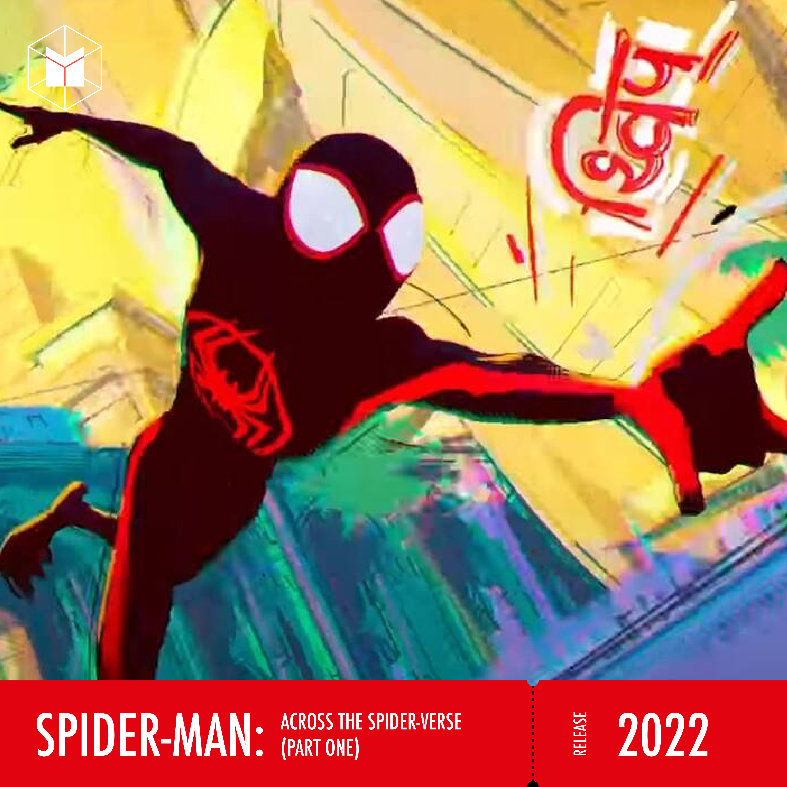

หนังใหม่ปี 2022
ปี ค.ศ.2020 กับ ปี ค.ศ.2021 ที่ผ่านมานั้น น่าจะเป็นปีที่คอหนังหลายคนมีความหน่ายใจอยู่ไม่น้อย เนื่องจากการมาถึงของไวรัส COVID-19 จึงทำให้หนังหลายเรื่องนั้น ทำการฉายในช่วงที่คนดูไม่สามารถออกไปดูในโรงภาพยนตร์ให้ได้ หรือหลายเรื่องก็ตัดสินใจไปฉายผ่านช่องทางสตรีมมิ่งออนไลน์แทน และก็ยังมีหนังอีกหลายเรื่องที่ตัดสินใจเลื่อนฉายออกไปแทน
ทำให้ในปี ค.ศ.2022 ที่กำลังจะมาถึงนี้ มีหนังจำนวนมากทีเดียวรอเข้าฉาย ด้วยเหตุผลที่ว่าคอหนังหลายประเทศในโลกน่าจะทำการฉีดวัคซีนกันแล้ว และโรงภาพยนตร์ก็มีการปรับตัวสำหรับการฉายหนังให้มากพอที่จะมีความปลอดภัยให้คนไปรับชมได้ ด้วยเหตุนี้ ปี ค.ศ.2022 จึงมีหนังหลายเรื่องรอคิวเข้าฉายกันอยู่แบบชวนกระเป๋าเงินสั่นกันเล็กน้อย
ด้วยเหตุนี้เราเลยขอหยิบหนังมา 23 เรื่องเพื่อมาแนะนำว่า ปีหน้าเนี่ย น่าจะมีหนังเหล่านี้ที่หลายท่านอาจจะอยากเดินทางไปดูในโรงภาพยนตร์แบบเต็มอรรถรส
Scream
ฆาตกรหน้ากากผีกลับมาอีกครั้งแล้ว โดยในภาคที่ 5 นี้ ได้คู่หูผู้กำกับจากภาพยนตร์เรื่อง Ready Or Not มากำกับแทน เวส เครเวน (Wes Craven) ผู้ล่วงลับ ตัวหนังเลยเล่าเรื่อง 25 ปีให้หลังจากภาคก่อนหน้า ทำให้มีกลุ่มวัยรุ่นยุคใหม่ต้องรับคำชี้แนะจากกลุ่มผู้รอดชีวิตจากเหตุการณ์ร้ายในเมืองวู้ดส์โบโรอีกครั้ง และฆาตกรคนใหม่ก็เหมือนจะคุ้นเคยกับเหยื่อทั้งรุ่นเก่าและรุ่นใหม่เสียด้วย เกมการไล่ล่าครั้งนี้จะจบลงเช่นไร ?!
ตามที่บอกไปข้างต้นว่า ภาพยนตร์จะเป็นการร่วมมือกันระหว่างคนยุคเก่ากับคนยุคใหม่ จึงทำให้นักแสดงจากภาพยนตร์ชุดเก่า (ที่ยังรอดชีวิตอยู่ตามท้องเรื่อง) อย่าง ทั้ง เนฟ แคมป์เบิล (Neve Campbell), เดวิด อาร์เคว็ตต์ (David Arquette) และ คอร์ตนีย์ ค็อกซ์ (Courteney Cox) กลับมารับบทเดิมอีกครั้ง มาทำงานร่วมกับนักแสดงรุ่นใหม่ ซึ่งเป็นไปตามคอนเซ็ปต์ของทีมผู้สร้างที่อยากให้ภาพยนตร์ภาคนี้ เป็นทั้งเรื่องราวต่อจากเดิมและส่งไม้ต่อให้กลุ่มนักแสดงใหม่ไปพร้อมๆ กัน แต่ยังไม่แน่ชัดนักว่า ภาพยนตร์ภาคนี้จะสามารถเปลี่ยนโครงสร้างให้กับภาพยนตร์แนวไล่ฆ่าได้เหมือนกับที่ภาคแรกสุดเคยทำได้หรือไม่
The Flash
จักรวาลภาพยนตร์ฝั่ง DCEU ดูเงียบหายกันไประยะหนึ่ง เนื่องจากมีปัญหาหลายประการ จนกระทั่งภาพยนตร์ Shazam ทำให้ทาง DC Filmes พอจะตั้งกระบวนได้ว่าภาพยนตร์เรื่องต่อๆ ไปของจักรวาลจะไปทางไหน และทำให้ภาพยนตร์เรื่องหนึ่งของฝั่ง DCEU ที่จะฉายในปี ค.ศ.2020 อย่าง The Flash น่าจะเป็นความหวังใหม่ทั้งผู้สร้างและคนดูเลย
The Flash ฉบับภาพยนตร์ หยิบยกเอาโครงเนื้อเรื่องจากคอมิค Flashpoint ที่ตัวของ Barry Allen/The Flash พยายามแก้ไขประวัติศาสตร์ไม่ให้แม่ของตัวเองเสียชีวิต ด้วยการวิ่งผ่านข้ามพหุภพ แต่ในขณะเดียวกันมันกลับสร้างเรื่องวิบัติมากมายตามมาแทน โดยตัวภาพยนตร์นั้นได้ แอนเดรส มัสเชียต (Andy Muschietti) ผู้กำกับของภาพยนตร์ It มารับหน้าที่กำกับ
แม้ว่าตัวภาพยนตร์จะยังไม่ระบุว่าทรงเรื่องจะถูกปรับจากการ์ตูนต้นฉบับขนาดไหนแต่ที่ชัดเจนแล้วก็คือ ภายในเรื่องจะมี Batman ปรากฏตัวถึงสองคน นั่นคือ เบน แอฟเฟล็ก (Ben Affleck) ที่เคยรับบทนี้ในจักรวาล DCEU มาก่อนแล้ว กับ Bruce Wayne ที่จะรับบทเป็นอัศวินรัตติกาลในวัยชราที่เชื่อมโยงกับภาพยนตร์ Batman (ค.ศ.1989) กับ Batman Returns (ค.ศ.1992)
นอกจากความเข้มข้นที่น่าจะเกิดขึ้นในภาพยนตร์เรื่องนี้ และถัาทางผู้สร้างเลือกที่จะทำการเปลี่ยนแปลงเนื้อหาของจักรวาลหรือเปลี่ยนแปลงนักแสดงของฮีโร่หลายตัว ก็น่าจะอาศัยหนังเรื่องนี้ในการกระทำสิ่งเหล่านั้นอย่างแน่นอน ยังไม่รวมว่า ตัวละคร Shazam กับ Black Adam (ที่ภาพยนตร์จะเข้าฉายในปี ค.ศ.2022 เช่นกัน) ก็อาจจะปรากฏตัวในหนังเรื่องนี้ด้วยก็เป็นได้
The Batman
แนวทางหนึ่งของฝั่ง DC Films ที่ดูแล้วไปได้ดีก็คือ ภาพยนตร์ที่เจาะตัวละครของ DC แต่ไม่อยู่ในจักรวาล DCEU อย่างก่อนหน้านี้ที่ Joker ที่สามารถทำให้ วาคีน ฟินิกซ์ (Joaquin Phoenix) คว้ารางวัลออสการ์สาขาดารานำชายกลับไปได้ ซึ่งภาพยนตร์ The Batman ของผู้กำกับ แมตต์ รีฟส์ (Matt Reeves) เองก็มีประกายความน่าสนใจในแบบเดียวกัน
The Batman เดินเรื่องอยู่ในช่วงที่อัศวินรัตติกาลออกปฏิบัติการต่อสู้กับอาชญากรรมเป็นปีที่สอง ตำรวจยังไม่ไว้ใจมนุษย์ค้างคาวแบบเต็มเปี่ยม แต่ก็ยอมรับศักยภาพของเขา และในช่วงนั้นเอง Riddler คนร้ายสายปริศนาก็ท้าทายทั้งมนุษย์ค้างคาวด้วยคำถามที่เกี่ยวพันกับชีวิตส่วนตัวของ Bruce Wayne อีกด้วย และทำเหตุการณ์ในเมือง Gotham ดูยุ่งเหยิงขึ้นไปอีกหลายขั้น
ภาพยนตร์ The Batman รวมตัวเอาดารามากฝีมือมาอยู่ในเรื่องเดียว ทั้ง พอล ดาโน่ (Paul Dano) ในบท Riddler, เจฟฟรีย์ ไรต์ (Jeffrey Wright) ในบท James Gordon, แอนดี้ เซอร์คิส (Andy Serkis) ในบท Alfred Pennyworth, โซอี้ คราวิทซ์ (Zoë Kravitz) รับบท Cat Woman, รวมถึง โรเบิร์ต แพตตินสัน (Robert Pattinson) ที่สวมผ้าคลุมเป็น Batman ที่มืดมนและเกรี้ยวกราดกว่าฉบับอื่นก่อนหน้า
ตัวภาพยนตร์ตั้งใจทำให้เป็นภาพยนตร์แนวนัวร์ เชื่อได้ว่าเรื่องราวจะดุดันมากกว่าภาคอื่นๆ และน่าจะสร้างกระแสได้ไม่แพ้ Batman ภาคอื่นๆ ก่อนหน้านี้
Doctor Strange in the Multiverse of Madness
ภาพยนตร์ฝั่ง MCU ก็กลายเป็นขาประจำของคนดูหนังกระแสหลักที่จะต้องติดตามกันแทบทุกปีว่า มีเรื่องอะไรเข้าฉายกันบ้าง และในปี ค.ศ.2022 ก็มีหนังใน Phase 4 เข้าฉายหลายเรื่องทีเดียว
ดังนั้นเราขอหยิบยกเอา ภาพยนตร์ภาคที่สองของหมอแปลก Doctor Strange in the Multiverse of Madness ที่ก่อนหน้านี้หลายคนก็คาดว่าจะเป็นการเปิด พหุภพ หรือ Multiverse เพื่อดึงตัวละคนอื่นเพิ่มเติมเข้ามา แต่ ณ จุดๆ นี้ ที่ภาพยนตร์กับซีรีส์กับฝั่ง MCU ทำให้เห็นแล้วว่า จะมีตัวละครมากมายข้ามพหุภพมาแน่ๆ เลยทำให้ภาพยนตร์เรื่องนี้มีความน่าสนใจว่า จะก่อความปั่นป่วนให้ไทม์ไลน์แค่ไหน
นอกจาก เบเนดิกต์ คัมเบอร์แบตช์ (Benedict Cumberbatch) ที่จะกลับมารับบท Dr.Strange แล้ว ในหนังยังจะได้ อลิซาเบธ โอลเซ่น (Elizabeth Olsen) มาปล่อยพลังของ Scarlet Witch หลังจากที่เธอโชว์ความวุ่นวายให้โลกเห็นมาก่อนแล้วในซีรีส์ WandaVision ซึ่งพอรวมกับผลงานในฝั่ง MCU ที่ออกมาก่อนหน้านี้แล้ว ค่อนข้างชัดเจนว่ายอดนักเวทของโลก จะต้องรับมือกับความเปลี่ยนแปลงมหาศาลที่เกิดขึ้นในไทม์ไลน์อย่างแน่นอน
อีกทั้งการได้ แซม ไรมี (Sam Raimi) มาเป็นผู้กำกับ ก็พอจะเดาได้ว่า ภาพยนตร์น่าจะมาครบทั้งฉากแอ็กชั่นปนตลก งานภาพที่น่าจะมีความบ้าคลั่งแบบมึนๆ รวมถึงดราม่าที่น่าจะเข้มข้นกันระดับหนึ่งด้วย
Thor: Love and Thunder
อีกเรื่องที่เรายกพื้นที่ให้ตัวแทนจากทาง MCU ก็คือ Thor: Love and Thunder ภาคที่ 4 ของเทพเจ้าสายฟ้า ใน Phase 4 ของ MCU ที่ได้ ไทกา ไวทีที (Taika Waititi) กลับมานั่งเก้าอี้ผู้กำกับอีกครั้ง แถมยังร่วมเขียนบทของหนังภาคต่ออีกด้วย
ในภาพยนตร์ภาคต่อนี้ ยังได้ คริส เฮมสวอร์ธ (Chris Hemsworth) กับ เทสซา ธอมป์สัน (Tessa Thompson) กลับมารับบท Thor กับ Valkyrie อีกครั้งหนึ่ง และได้ นาตาลี พอร์ตแมน (Natalie Portman) กลับมารับบท Jane Foster อีกครั้ง แถมมีการยืนยันคร่าวๆ แล้วด้วยว่า เธอจะมาพร้อมค้อน Mjolnir และมีพลังของเทพสายฟ้าเช่นเดียวกับ Thor เสียด้วย ซึ่งรอการเฉลยว่าเธอได้พลังมาอย่างไร รวมถึงในภาคนี้ยังได้ดึงตัวดาราฝีมือดีอย่าง คริสเตียน เบล (Christian Bale) มารับบท Gorr The God Butcher ด้วย
อีกส่วนที่ประกาศมาแล้วก็คือ กลุ่ม Guardians Of Galaxy รวมถึง Grandmaster (ที่รับบทโดย เจฟฟ์ โกลด์บลุม (Jeff Goldblum)) จากภาค Ragnarok ก็จะปรากฏตัวในภาพยนตร์เรื่องนี้ แต่น่าจะเป็นเพียงบทรับเชิญมากกว่าจะมาชิงบทเด่นแบบเต็มตัว
ส่วนเนื้อหาของภาพยนตร์ภาคใหม่ ณ วันที่เขียนบทความนี้ มีแค่การคาดการณ์ว่าจะเป็นศึกสังหารเทพ และอาจจะเป็นการวางตัวให้บอสใหญ่ตัวต่อไปของ MCU ได้ปรากฏตัวอีกด้วย
Thirteen Lives
นับตั้งแต่เหตุการณ์ ’13 หมูป่า’ สิ้นสุดลงใหม่ๆ ก็มีบริษัทจากทั่วโลกมาติดต่อกันเพื่อซื้อสิทธิ์ไปสร้างภาพยนตร์ และก่อนหน้านี้ก็พอจะมีภาพยนตร์และภาพยนตร์สารคดีเกี่ยวกับเหตุการณ์ดังกล่าวออกมาฉายบ้างแล้ว แต่ตัว Thirteen Lives ของผู้กำกับ รอน ฮาวเวิร์ด (Ron Howards) ซึ่งน่าจะเป็นคนที่เหมาะกับงานอยู่ไม่น้อย เพราะถ้าย้อนไปดูหนังหลายเรื่องของผู้กำกับคนนี้ก็มักจะเล่าเรื่องของคนธรรมดาที่ทำเรื่องยิ่งใหญ่ได้กินใจ
ตัวภาพยนตร์ทำการถ่ายทำกันที่ประเทศออสเตรเลียในช่วงกลางปี ค.ศ.2021 ที่ผ่านมา โดยเหตุผลหลักๆ ในการไปถ่ายทำที่นั่นเพราะตัวการถ่ายทำฉากภายในถ้ำ (จำลอง) ทำได้ง่ายกว่าในโรงถ่ายภาพยนตร์ที่ตั้งอยู่ในออสเตรเลีย
อย่างไรก็ตามภาพยนตร์ยังมีดาราไทยไปรวมแสดงหลายคนทีเดียว ตั้งแต่ดาราไทยที่ชาวต่างชาติคุ้นเคยอย่าง วิทยา ปานศรีงาม, ดาราระดับหน้าของไทยอย่าง เวียร์-ศุกลวัฒน์ คณารศ, ตุ้ย-ธีรภัทร์ สัจจกุล, ตู่-ภพธร สุนทรญาณกิจ, เจมส์-ธีรดนย์ ศุภพันธุ์ภิญโญ ไปร่วมแสดงบทบุคคลสำคัญ ประกบกับ ดาราฮอลลีวูดอย่าง วิกโก มอร์เทนเซน (Viggo Mortensen) กับโคลิน ฟาร์เรล (Colin Farrell)
เมื่องานสร้างค่อนข้างน่าไว้ใจ เรื่องราวได้รับความสนใจ อีกเรื่องที่เชื่อว่าจะเกิดขึ้นหลังภาพยนตร์ฉายก็คงจะเป็นความดราม่าที่เทียบเคียงเรื่องจริงกับเรื่องแต่ง ซึ่งเกิดขึ้นมาแล้วกับภาพยนตร์และสารคดีเกี่ยวกับเหตุการณ์ในถ้ำหลวงเรื่องก่อนหน้า แต่นั่นอาจจะเป็นสิ่งที่หนังอยากได้สำหรับการโปรโมทนะ
Moonfall
เจ้าพ่อหนังเหตุวินาศกรรมถล่มโลก โรลันท์ เอ็มเมอริช (Roland Emmerich) กลับไปทำหนังแนวเหตุการณ์วิบัติภัยอีกครั้ง และไม่แน่ใจว่า คุณโรลันท์แกอาจจะเห็นว่าภัยพิบัติในโลกอาจจะใหญ่ไม่พอ เลยจับเอาดวงจันทร์มาถล่มโลกเอาเสียเลย
แต่เหมือนว่าแค่นั้นจะไม่สาแก่ใจผู้กำกับภาพยนตร์คนนี้เท่าไหร่ เพราะนอกจากจะหยิบเอาเทหวัตถุมาฟาดใส่พื้นโลกแล้ว มันอาจจะไม่ธรรมดาพอ ตัวหนังเลยใส่ปมเเพิ่มเติมเข้าไปว่า ภายในดวงจันทร์ของโลกที่มนุษยชาติคุ้นเคยนั้น ความจริงอาจจะเป็นสถานที่กักขังสิ่งมีชีวิตต่างดาวอยู่ก็ได้ และอาจจะเป็นเจ้าสิ่งมีชีวิตที่ว่านั่นล่ะที่ผลักให้ดวงจันทร์ร่วงลงใส่โลก
เนื้อหาพัลวันกันขนาดนี้ก็ต้องลุ้นกันอีกนิดว่า เนื้อเรื่องจะวินาศไปตามโลกด้วยหรือเปล่า
Avatar 2
ย้อนกลับไปเมื่อปี ค.ศ.2009 ได้มีภาพยนตร์เรื่องหนึ่งถูกส่งออกมาสร้างปรากฏการณ์ให้กับคนดูหนังทั่วโลก ด้วยเทคนิคภาพสามมิติที่สมจริงและเหนือกว่าเทคโนโลยียุคก่อนหน้า แต่ในด้านเนื้อเรื่องนั้นอาจจะธรรมดาไปเสียหน่อย รวมไปถึงว่าเรื่องราวในภาพยนตร์ Avatar ในภาคแรกนั้นยังเป็นแค่จุดเริ่มต้นเรื่องราวของมนุษย์โลกกับชาวดาวนาวีเท่านั้น
แต่เจมส์ แคเมรอน (James Cameron) ที่เป็นผู้กำกับของภาพยนตร์เรื่องนี้ก็ใช้เวลายาวนานในการพัฒนาภาพยนตร์ภาคต่อของเขา และนั่นทำให้ Avatar 2 ใช้เวลานานราว 10 ปีในการสร้างเลยทีเดียว
ในภาคต่อนี้ จะเล่าเรื่องของ Jake Sully (แสดงโดย แซม เวิร์ธธิงตัน (Sam Worthington)) ที่ใช้ชีวิตบนดาว Na’vi ในร่างใหม่ที่เป็นทำให้เขาเป็นคนท้องถิ่นอย่างเต็มสูบ แต่ก็มีศึกครั้งใหม่เกิดขึ้นบนดาว Pandora อีกครั้งหนึ่ง แต่คราวนี้เหมือนการศึกไปสมรภูมิที่ศึกกลางอากาศมากขึ้นแทน และคราวนี้ Jake ไม่ได้ต่อสู้เพื่อปกป้องดวงดาวเท่านั้น แต่เพื่อปกป้องลูกๆ กับครอบครัวของเขาบนดาวดวงนี้ด้วย
ทางทีมสร้างยังเผยรายละเอียดว่าเจมส์ แคเมรอนได้เขียนบทภาพยนตร์ไว้อีก 4 ภาคแล้ว และตัว ภาพยนตร์ภาค 2 กับ 3 ก็ทำการถ่ายทำต่อเนื่องติดกัน ดันนั้นตัวภาพยนตร์ภาค 2 ก็จะออกฉายในช่วงปลายปี ค.ศ.2022 ส่วนภาค 3 จะตามมาในปี ค.ศ.2024 ส่วนภาคอื่นๆ นั้นก็มีประกาศโดยคร่าวว่าจะฉายในช่วงปีต่อๆ ไป
The Black Phone
ขยับมาดูภาพยนตร์สายระทึกขวัญกันบ้าง เพราะส่วนตัวคิดว่าภาพยนตร์เรื่อง Black Phone นี้น่าสนใจไม่น้อยทีเดียว เพราะนี่เป็นการกลับมาทำหนังแนวชวนขนลุกอีกครั้งของ สก็อตต์ เดอร์ริคสัน (Scott Derrickson) ผู้กำกับของ Sinister กับ Doctor Stange นำเอาเรื่องสั้นของ โจ ฮิลล์ (Joe Hill) ลูกชายของ Steven King มาดัดแปลงเป็นภาพยนตร์
เรื่องราวของ Black Phone เดินเรื่องย้อนไปในยุค 1970 มีเด็กถูกลักพาตัวไป 5 คน และยังไม่มีใครหาตัวเจอ จนกระทั่งเด็กคนที่ 6 โดนลักพาตัวไป แม้ว่าเด็กคนนี้จะโชคร้ายที่ถูกคนร้ายผู้ใส่หน้ากากแปลกประหลาดพาตัวมาขังไว้ ในห้องที่มีโทรศัพท์สีดำติดอยู่ริมกำแพง แต่โทรศัพท์ดังกล่าวไม่ได้ต่อสายสัญญาณใดๆ มันจึงไม่น่าจะใช้ติดต่อใครได้ จู่ๆ โทรศัพท์เครื่องนั้นก็ดังขึ้น แต่เสียงที่อยู่ปลายสายนั้น กลับเป็นเสียงของเด็กที่ถูกลักพาตัวไปก่อนหน้าทั้งยังถูกคนร้ายสังหารไปแล้ว และพวกเขาทั้ง 5 พยายามช่วยเหลือเด็กคนที่ 6 เพื่อสู้กับโจรลักพาตัวนั้น อย่างไรก็ตาม มันไม่ได้แปลว่าพวกเขาจะสามารถเอาตัวรอดจากคนร้ายไปได้โดยง่าย
ภาพยนตร์เริ่มเข้าฉายในเทศกาลภาพยนตร์ตั้งแต่ช่วงปลายปี ค.ศ.2021 และได้รับคำชื่นชมทั้งจากการแสดงของ อีธาน ฮอว์ก (Ethan Hawke) ที่รับบทเป็นคนร้ายผู้มีความน่ากลัว กับการนำเสนอของสก็อตต์ เดอร์ริคสันก็ยังทำได้ดีเหมือนที่เขาเคยนำเสนอมากับภาพยนตร์สยองขวัญเรื่องก่อนหน้านี้ที่เขากำกับ คอหนังที่อยากได้ความสะดุ้งในโรงหนังน่าจะถูกใจกันกับหนังเรื่องนี้
Nope
ภาพยนตร์แนวเขย่าขวัญชวนสะดุ้งอีกเรื่องที่จะมาให้ติดตามกันในปี ค.ศ.2022 กับผลงานเรื่องใหม่ของผู้กำกับ จอร์แดน พีล (Jordan Peele) หลังจากที่เขาห่างจากผลงานจอเงิน แล้วข้ามไปอำนวยการสร้างซีรีส์ The Twilight Zone มาพักหนึ่ง เขาก็พร้อมจะกลับมาสู่โรงภาพยนตร์อีกครั้งด้วยผลงานที่เขา ทำหน้าที่กำกับ, เขียนบท และอำนวยการสร้าง กับภาพยนตร์ชื่อชวนงงอย่าง Nope
แค่ตั้งชื่อก็เหมือนจะมีความไม่เอาโลกระดับหนึ่ง ทั้งยังทำให้ยากในการหาข้อมูลผ่านช่องทางใดๆ ก็ตาม เนื่องจากคำว่า Nope ถูกใช้แบบแพร่หลย แถมตัวจอร์แดน พีลยังเก็บรายละเอียดของภาพยนตร์ไว้ค่อนข้างมิดชิดอีก จะเปิดเผยออกมาก็เป็น โปสสเตอร์, ตัวนักแสดงหลัก ประกอบไปด้วย แดเนียล คาลูยา (Daniel Kaluuya) จาก Get Out, เคค พาล์มเมอร์ (Keke Palmer) และ สตีเว่น ยอน (Steven Yeun) จาก Minari กับการยืนยันว่านี่ยังจะมีความน่ากลัวบางอย่างเกิดขึ้นในเรื่อง
ส่วนตัวเนื้อหานั้น มีการแจ้งข่าวและคาดเดาหลายทางว่า ตั้งแต่การเป็นภาพยนตร์ที่เกี่ยวความสยองขวัญที่มาจากเมฆในโปสเตอร์ หรืออาจจะเป็นภาพยนตร์เกี่ยวกับมนุษย์ต่างดาวก็ได้ บางท่านก็เดาว่า ถ้าอ้างอิงจากนักแสดงนี่น่าจะเป็นภาคต่อของ Get Out ก็ได้นะ
อย่างไรก็ตาม ด้วยสไตล์การทำงานที่ใส่การวิพากษ์เรื่องในสังคม ที่เห็นได้แม้แตในงานสายตลก ทำให้เราคาดหวังว่า Nope จะไม่ออกมาแบบธรรมดานัก
Spider-Man: Across The Spider-Verse (Part One)

เพราะว่า Spider-Man: Into The Spider-Verse เป็นงานภาพยนตร์อนิเมชั่นที่มีความโดดเด่น ทั้งงานภาพและบทที่น่าสนใจ ทำให้หลายคนรอติดตามการเดินทางครั้งใหม่ของ Miles Morales กันอยู่อย่างใจจดใจต่อ
และในช่วงเดือนธันวาคม ปี ค.ศ.2021 ก็มีการปล่อยตัวอย่างแรกของภาพยนตร์อนิเมชั่นภาคที่สองจากฝั่งจักรวาล Spider-Verse เรื่องราวในภาคใหม่นี้ เหมือนว่า Spider-Gwen นั้นสามารถเดินทางข้ามมิติได้อย่างอิสระแล้ว หลังจากที่ภาคแรกเป็นการข้ามมิติโดยอุบัติเหตุ และเธอก็ชวน Miles Morales ไปผจญภัยครั้งใหม่ และเจอกับซูเปอร์ฮีโร่พลังแมงมุมจากจักรวาลใหม่ โดยมีการยืนยันว่า หนึ่งในตัวละครใหม่ของภาคนี้คือ Miguel O’Hara หรือ Spider-Man 2099 จากยุคอนาคตอันห่างไกล
นอกจากนั้นทางทีมผู้สร้างอนิเมชั่นยังได้เผยรายละเอียดว่า จะมี Peter B. Parker ที่เคยปรากฏตัวในภาคแรกกลับมาอีกครั้ง, Jessica Drew หรือ Spider-Woman ก็มีข่าวว่าจะมาปรากฏตัวด้วย รวมถึงมีการเกริ่นๆ ไว้ว่า Yamashiro Takuya หรือ Spider-Man ฉบับซีรีส์ของประเทศญี่ปุ่น ก็ถูกออกแบบไว้แล้ว จึงอาจจะมาปรากตัวในภาพยนตร์ด้วย และมีการคาดการณ์กันแบบสนุกๆ ว่า บางทีตัวละคร Spider-Man จากฝั่ง MCU ก็อาจจะมาปรากฏตัวในภาพยนตร์ฝั่งอนิเมชั่นได้เช่นกัน
ภาพยนตร์ Spider-Man: Across The Spider-Verse ยังมีกำหนดฉาย Part Two (หรือ ภาค 3) ในปี ค.ศ.2023 ทั้งยังมีแผนการสร้างภาพยนตร์ภาคแยกของเหล่าฮีโร่หญิงที่มีพลังแมงมุมในตัวอีกเรื่อง ซึ่งน่าจะทำให้คนที่ชอบภาพยนตร์จักรวาลอนิเมชั่นชุดนี้ได้ติดตามกันไปอีกระยะใหญ่กันเลย
Sing A Bit Of Harmony
พูดถึงงานอนิเมชั่นแล้ว ก็ขอหยิบงานจากฝั่งญี่ปุ่นมาเสวนากันบ้างครับ ความจริงตัวภาพยนตร์เรื่องนี้เข้าฉายในบ้านเกิดแล้วประเทศญี่ปุ่นตั้งแต่ช่วงปลายปี ค.ศ.2021 แต่โดยปกติแล้วค่ายหนังในไทยมักจะนำหนังแนวดังกล่าวเข้ามาช้ากว่าการฉายที่ญี่ปุ่น เลยคาดหวังว่าเราจะได้เห็นภาพยนตร์นี้ในช่วงปี ค.ศ.2022 แทน
กับเรื่องของ Satomi เด็กนักเรียนหญิงที่มีแม่เป็นผู้พัฒนา A.I. และเธอก็มีความเห็นอกเห็นใจต่อปัญญาประดิษฐ์ จนทำให้เพื่อนร่วมชั้นหลายคนตั้งใจไม่พอใจพฤติกรรมนั้นนัก แต่ Satomi ก็ไม่รู้สึกเสียหายอะไร และตั้งใจใช้ชีวิตสันโดษ จนกระทั่งวันหนึ่งมีนักเรียนที่ชื่อ Shion ย้ายเข้ามาใหม่ ซึ่งความจริงแล้ว เธอเป็นหุ่นยนต์ติดตั้ง A.I. รุ่นใหม่ที่มีความใกล้เคียงมนุษย์ และถูกส่งมาทดสอบในโรงเรียนว่าจะมีความแนบเนียนพอจะเข้าสังคมได้หรือไม่ แต่ Shion กลับยึดติดในการ ‘สร้างความสุข’ ให้กับ Satomi จนทำให้เกิดเหตุการณ์วุ่นวายที่ทำให้นักเรียนกลุ่มหนึ่งทราบว่า Shion เป็นหุ่น การผูกมิตรกันระหว่างมนุษย์ กับ A.I. จึงเริ่มต้นขึ้น และสายสัมพันธ์ของพวกเขาก็ถูกทดสอบเมื่อบริษัทผู้ผลิต Shion มีแผนจะกำจัด A.I. ที่ถูกมองว่าไม่สมบูรณ์แบบเครื่องนี้
ภาพยนตร์อนิเมะเรื่องนี้เป็นผลงานกำกับและเขียนบทของ โยชิอุระ ยาสุฮิโระ (Yoshiura Yashuhiro) ที่เคยสร้างอนิเมะเรื่อง Time Of Eve ซึ่งเล่นประเด็นความพร่าเลือนของมนุษย์กับปัญญาประดิษฐ์มาก่อนแล้ว แต่ในภาพยนตร์เรื่อง Sing A Bit Of Harmony สามารถเข้าถึงได้ง่ายขึ้น เพราะตัวเทคโนโลยีบนโลกก็มีการพัฒนาไปมากจนหลายสิ่งในเรื่องแต่งกลายเป็นความจริงกันแล้ว รวมถึงว่าตัวอย่างภาพยนตร์ที่เปิดมาก็มีบทเพลงที่ติดหูมาด้วย และตัวภาพยนตร์ยังได้รางวัล Audience Award จากงานภาพยนตร์นานาชาติมาบ้างแล้ว ซึ่งสอดคล้องกับทางในญี่ปุ่นที่รีวิวฝั่งคนดูออกมาดูดีทีเดียว
Spencer

เรื่องราวของ ไดอานา เจ้าหญิงแห่งเวลส์ ถือว่าเป็นมุมมองที่น่าสนใจอย่างยิ่งสำหรับผู้คนทั่วโลก ไม่ใช่แค่ในฐานะของสตรีผู้เคยเป็นชายาของมงกุฎราชกุมารอังกฤษ กิจกรรมสาธารณกุศลของเธอผู้นี้ยังมีความโดดเด่นมากมาย โดยเฉพาะในภาพการรณรงค์ต่อต้านความรุนแรงและด้านสุขอนามัย ที่เธอมักจะไปร่วมรับชมพื้นที่หน้าด่านด้วยตนเอง อย่างไรก็ตาม หลังจากการหย่าร้างและสิ้นพระชนม์อย่างกะทันหัน ทำให้มุมมองอื่นๆ ของ เลดี้ไดอานา สเปนเซอร์ ได้รับความสนใจจากผู้คนมากขึ้น
และนั่นทำให้ผู้กำกับ พาโบล ลาร์เรน (Pablo Larraín) อยากจะบอกเล่ามุมของ ไดอาน่า กับเรื่องราวที่เกี่ยวพันกับ คนในตระกูลสเปนเซอร์ และอะไรเป็นปมทำให้เธอแต่งงานและหย่าร้างอย่างที่ผู้คนรับทราบกันในที่สุด
ภาพยนตร์เข้าฉายไปแล้วในหลายประเทศ และความเห็นต่อหนังนั้นออกไปในทางเดียวกันว่า แม้เรื่องราวอาจจะเป็นการตบแต่งให้เล่าเรื่องในฐานะภาพยนตร์บันเทิงได้มากขึ้น แต่ที่ชัดเจนคือ การรับบทเป็น เลดี้ไดอาน่า ของ คริสเตน สจ๊วต (Kristen Stewart) ในเรื่องนี้นั้นโดดเด่น จนอาจจะเป็นบทที่ทำให้เธอคว้ารางวัลออสการ์กลับไปได้ และตั้งแต่ช่วงปลายปี ค.ศ.2021 ที่ผ่านมา เธอก็คว้ารางวัลไปแล้วหลายเวทีเสียด้วย
จึงมีโอกาสที่ภาพยนตร์เรื่องนี้จะเข้าฉายในประเทศไทยในช่วงภาพยนตร์สายรางวัลในช่วงปี ค.ศ.2022 นี้
Ghostbusters: Afterlife
ณ จุดๆ นี้ ถ้าบอกว่าอะไรน่ากลัวกว่าผีสาง เราอาจจะแซวได้เบาๆ ว่า ก็ COVID-19 ยังไงล่ะ เพราะเดิมที บริษัทกำจัดผี ภาคต่อนี้มีกำหนดเข้าฉายตั้งแต่กลางปี ค.ศ.2020 แต่ถูกเลื่อนฉายมายาวๆ จนถึงปี ค.ศ.2022 นั่นเอง
ตัวเนื้อหาของ Ghostbusters: Afterlife เล่าถึงครอบครัวที่ย้ายมาอยู่ในเมืองไกลปืนเที่ยง ก่อนจะได้รับทราบว่า เจ้าของบ้านนี้เดิมทีแล้วคือทีมโกสต์บัสเตอร์ซึ่งเคยโด่งดังในอดีต และคราวนี้ถึงเวลาของเด็กรุ่นใหม่ ต้องเรียนรู้จากผู้ใหญ่ในปัจจุบัน เพื่อรับทราบว่าคนรุ่นก่อนนั้นเคยรับมือกับผีสางอย่างไร
ตัวภาพยนตร์ได้ เจสัน ไรท์แมน (Jason Reitman) เป็นผู้กำกับ ส่วนตัวของ ไอวาน ไรต์แมน (Ivan Reitman) ผู้เป็นพ่อและเป็นผู้กำกับของภาพยนตร์ภาคแรกเขยิบไปอำนวยการสร้างภาพยนตร์เอง และนักแสดงเก่าจากภาพยนตร์ชุดดั้งเดิมก็มารับเชิญในภาพยนตร์ดังนี้ ตัวภาพยนตร์ออกฉายในหลายประเทศช่วงปลายปี ค.ศ.2021 และมีคำชื่นชมต่อภาพยนตร์ภาคต่อนี้ แม้ว่าพล็อตอาจจะเดิมๆ แต่ให้อรรถรสที่ชวนระลึกถึงภาพยนตร์ชุดเดิมทั้งยังมีดารายุคใหม่ที่รับช่วงได้อย่างดี
Top Gun: Maverick
เป็นภาพยนตร์อีกเรื่องที่ประสบภัยโควิด จนทำให้หนังโดนเลื่อนมาฉายปี ค.ศ.2022 เอง ตัวภาพยนตร์ภาคต่อเว้นวรรคจากภาคที่แล้วมา 36 ปี โดยเรื่องราวของภาคใหม่ ถูกระบุว่าจะเป็นเหมือนการสานต่อเรื่องราวผสมกับการรีบูทไปพร้อมกัน
Pete ‘Maverick’ Mitchell เป็นอดีตนักบินมือดีของนาวิกโยธินสหรัฐแต่ด้วยเหตุผลกลใดบางอย่างทำให้เขาถูกปลดไป จนกระทั่งวันหนึ่งที่เขาถูกเชิญกลับมาสู่ถิ่นเสืออากาศอีกครั้งในฐานะครูฝึกนักบินรบรุ่นใหม่และหนึ่งในนั้นมีลูกชายของเพื่อนสนิทที่จากไปอยู่ด้วย สิ่งที่ Maverick ต้องรับมือ จึงมีทั้งเด็กรุ่นใหม่ที่มีมุมมองเกี่ยวกับการบินที่ต่างกัน และเรื่องราวในอดีตของตัวเขาเองที่อาจจะตามมาหลอนการโบยบินบนท้องฟ้าครั้งใหม่นี้
และตามวิสัยภาพยนตร์ที่ ทอม ครูซ (Tom Cruise) ร่วมสร้างในช่วงหลังนี้ จะมีการนำเอาอุปกรณ์จริงมาถ่ายทำ อย่างในภาพยนตร์นี้ก็มีการขับ-นั่งเครื่องบินจริงในการถ่ายทำด้วย อย่างน้อยความอลังการย่อมจัดเต็มแน่นอน แต่หนังจะปลุกกระแสเสืออากาศให้รับความนิยมได้เหมือนภาคแรกหรือไม่นั้น ก็เป็นเรื่องที่เราต้องติดตามกันเป็นการต่อไป
Morbius
หลายท่านอาจจะทราบกันแล้วว่า Sony Pictures เป็นผู้ถือสิทธิ์ตัวละครจากจักรวาลการ์ตูน Marvel ในฟากที่เกี่ยวพันกับ Spider-Man ไว้จำนวนหนึ่ง และทำให้พวกเขาตั้งใจจะสร้างจักรวาลภาพยนตร์ที่อิงจากกลุ่มตัวละครเหล่านั้นและใช้ชื่อจักรวาลว่า Sony’s Spider-Man Universe โดยก่อนหน้านี้ก็มีภาพยนตร์ Venom กรุยทางให้จักรวาลนี้ไปก่อนแล้ว ซึ่ง Mobius เองก็จะเป็นภาพยนตร์เรื่องต่อมาที่ขยายจักรวาลฟากนี้นั่นเอง
Michael Morbius เป็นหมอและนักวิทยาศาสตร์ที่มีอาการโรคทางเลือดจนทำให้เขาเดินเหินไม่สะดวกและหาทางรักษาตนเอง แต่เมื่อเขาได้เจอวิธีการรักษาตัวเอง มันกลับมีผลข้างเคียงทำให้เขามีพลังเหนือมนุษย์ แถมมาด้วยความกระหายเลือดประหนึ่งแวมไพร์ ทำให้หมอที่เคยช่วยคนต้องหาทางยั้งตัวเองเพื่อไม่ให้กลายเป็นเป็นสัตว์ประหลาดผู้บ้าคลั่ง
แม้ว่า Morbius จะมาในฐานะภาพยนตร์ที่เปิดฉากให้ตัวละครใหม่ (และเป็นหนึ่งในภาพยนตร์ที่ถูกเลื่อนฉายยาวๆ มาจากปี ค.ศ.2020 มาปี ค.ศ.2022 แทน) แต่ความน่าสนใจอยู่ตรงที่มีตัวละคร Adrian Toomes / Vulture ที่เคยปรากฏตัวใน Spider-Man: Home Coming ในภาพยนตร์ด้วย ทำให้ชวนคิดต่อไปว่าบางที จักรวาล Sony’s Spider-Man Universe กับ MCU อาจจะเริ่มเขยิบเข้ามาใกล้ชิดกันมากขึ้นต่อจากที่ก่อนหน้านี้เคยเกริ่นไว้เบาๆ ใน Venom มาก่อนแล้ว
Uncharted

จากแฟรนไชส์เกมยอดนิยมของฝั่ง PlayStation กลายมาเป็นภายพนตร์คนแสดงของทาง Columbia Pictures (ซึ่ง Sony เป็นเจ้าของอีกที) ตัวภาพยนตร์อยู่ในขั้นตอนเตรียมการสร้างมานานแล้ว แต่เพิ่งถ่ายทำกันไปในช่วงปี ค.ศ.2020 นี่เอง
ตัวหนังตั้งต้นที่เรื่องราวของ Sir Francis Drake นักเดินเรือชาวอังกฤษผู้ถือว่าเดินทางรอบโลกได้เป็นคนแรก และเชื่อว่าซุกซ่อนสมบัติที่ได้จากการต่อสู้ในตลอดช่วงชีวิตเอาไว้ และ Nathan Drake กล่าวว่าเขาคือทายาทของนักสำรวจคนดังในยุคปัจจุบัน และใช้ชีวิตเป็นพนักงานบาร์ระหว่างเก็บข้อมูลและฝึกฝนตน จนกระทั่งวันหนึ่ง Sully หรือ Victor Sullivan ได้ชักชวนให้ชายหนุ่มมาร่วมล่าสมบัติ ที่เสี่ยงตายและหวือหวากว่าที่ตัว Nathan จะคาดคิด
ตัวหนังมีกำหนดเข้าฉายช่วงต้นปี ค.ศ.2022 โดยได้ดาราอย่าง ทอม ฮอลแลนด์ (Tom Holland) กับ มาร์ก วาห์ลเบิร์ก (Mark Wahlberg) รับบทนำ แต่ตัวภาพยนตร์จะกลายเป็นงานหลายภาคแบบฝั่งเกมไหม อาจจะต้องติดตามดูกันต่ออีกระยะ
Jurassic World: Dominion
เรื่องราวของไดโนเสาร์ในยุคปัจจุบันยังคงดำเนินต่อไป หลังจากที่ทื้งปมในภาพยนตร์ Jurassic World: Fallen Kingdom ว่าไดโนเสาร์หลุดเข้าไปยังบริเวณที่มนุษย์อยู่อาศัยแล้ว และในครั้งนี้มันไม่ใช่แค่มีไดโนเสาร์แค่ตัวเดียวหลุดเข้ามาในเมืองแบบที่เคยเกิดขึ้นมาก่อนเท่านั้น แต่นี่เป็นเหตุการณ์ที่สัตว์ทั้งฝูงกระจายตัวไปตามท้องที่ต่างๆ ดังนั้นโลกย่อมไม่มีทางเหมือนเดิม แต่จะเป็นการปรับตัวว่ามนุษย์จะอยู่กับสิ่งมีชีวิตจากอดีตอย่างไรแทน
ภาพยนตร์ภาคสุดท้ายของไตรภาค Jurassic World ที่ทีมผู้สร้างดึงเอาตัวเอกทั้งจาก ไตรภาคแรก และไตรภาคหลัง มารวมพลกันในหนังเรื่องเดียว และมีการเกริ่นไว้ว่าภาพยนตร์จะเป็นทั้งฉากจบยิ่งใหญ่ของสองไตรภาค กับเป็นการเดินหน้าเข้าสู่เรื่องราวใหม่ๆ เช่นกัน
Lightyear
Buzz Lightyear เป็นตัวละครยอดนิยมจากฟากฝั่งเฟรนไชส์ Toy Story ที่เราพอจะรู้ว่าของเล่นชิ้นนี้นั้นมาจากแฟรนไชส์ที่ได้รับความนิยมอย่างมากในโลกของภาพยนตร์ และเคยมีการสร้างการ์ตูนสปินออฟบอกเล่าเรื่องของตัวละครมาบ้างแล้ว แต่ในปี ค.ศ.2022 นี้ ทางทีมงาน Pixar ตัดสินใจที่อยากจะเล่าเรื่องราวต้นกำเนิดของตัวละครดังตัวนี้
ณ ตอนที่เขียนบทความนี้ เพิ่งมีการเปิดเผยแค่ว่า คริส อีแวนส์ (Chris Evans) จะมาพากย์เสียงเป็น Buzz Lightyear และยังไม่มีรายละเอียดใดๆ เกี่ยวกับเนื้อเรื่องมากนัก แต่อย่างน้อยก็น่าจะได้เห็น Buzz ใส่ชุดอวกาศแล้วต่อสู้กับ Emperor Zurg ที่เคยถูกแนะนำเอาไว้แล้วในฟากภาพยนตร์ Toy Story ด้วยนั่นเอง
Turning Red
Turning Red จะพาคนดูถอยหลังไปในช่วงปี ค.ศ.2002-2003 และเล่าเรื่องของ Meilin Lee เด็กหญิงเชื้อสายเอเชีย วัย 13 ปี ที่เรียนเก่ง กิจกรรมเย้อะ แล้วก็หลงใหลบอยแบนด์สุดหล่อตามวิสัยวัยรุ่น จนกระทั่งวันหนึ่งเธอกลับกลายร่างเป็นแพนด้าแดงขนาดยักษ์ อันเป็นผลจากต้นตระกูลของเธอเคยมีพันธะกับแพนด้าแดงในอดีต เลยทำให้ Meilin จะกลายร่างเป็นแพนด้าแดงยักษ์เวลาตื่นเต้นหรือเครียดจนเกินไป ชีวิตวัยรุ่นแบบวุ่นวายอีกนิดของ Meilin จึงเริ่มต้นขึ้น
ถ้าคุณเคยดูอนิเมชั่นของทาง Pixar อาจจะพอจำผลงานอนิเมชั่นเรื่องสั้นที่ชื่อ Bao ได้ งานของผู้กำกับเชื้อสายเอเซียท่านดังกล่าวนั้นเตะตาทีมงาน Pixar และให้โอกาสได้คุมบังเหียนในการสร้างภาพยนตร์อนิเมชั่นเต็มเรื่อง และผลงานที่เธอผลักดันออกมาก็คือ Turning Red นั่นเอง ดังนั้นภาพยนตร์เรื่องนี้น่าจะนำเสนอจุดยืนของกลุ่มคนเอเซียในชาติตะวันตกในยุคนั้นด้วย ซึ่งก็สอดคล้องกับแนวทางของ Disney-Pixar ที่มักจะทำผลงานเกาะกระแสสังคมของอเมริกาในแต่ละยุคด้วยนั่นเอง
Everything Everywhere All At Once
A24 ถือว่าเป็นบริษัทที่สร้างและจัดจำหน่ายภาพยนตร์อิสระในอเมริกาที่ถนัดการสร้างและจัดจำหน่ายผลงานที่มีความละเมียดหรือแหวกแหนวกว่าปกติ หรือถ้าอธิบายว่าเป็นบริษัทที่ถนัดทำหนังกระแสรองก็ไม่ผิดหนัก ในช่วงปี ค.ศ.2021 ที่ผ่านมานี้ พวกเขาประกาศว่า ทีมผู้กำกับ Daniels (แดเนียล กวัน (Daniel Kwan) กับ แดเนียล ไชเนิร์ท (Daniel Scheinert)) ที่เคยกำกับ Swiss Army Man กำลังสร้างภาพยนตร์เรื่องใหม่ที่ได้ แอนโทนี่ รุสโซ่ (Anthony Russo) กับ โจ รุสโซ่ (Joe Russo) อำนวยการสร้าง และทาง A24 ก็ยินดีทุ่มเงินสร้างภาพยนตร์เรื่องนี้มากที่สุดเท่าที่พวกเขาเคยสร้างมา
ภาพยนตร์เล่าเรื่องของ Evelyn Wang หญิงสาวที่มีปัญหากับการเคลียร์เรื่องใบเสร็จกับภาษีจำนวนมาก ที่จู่ๆ ก็พบกับภาพแปลกๆ แถมสามีเธอก็บอกว่า แท้จริงแล้วเธอคือผู้เดียวที่สามารถต่อสู้กับปีศาจที่เดินทางข้ามพหุภพได้ เพราะ Evelyn นั้นเป็นคนที่สามารถเชื่อมโยงความรู้, ความทรงจำของทุกพหุภพมาใช้ในได้พร้อมกัน ประหนึ่งว่าเธออยู่ทุกหนแห่งพร้อมกันในห้วงเวลาเดียว แต่ตัว Evelyn ไม่แน่ใจนักว่าเธอจะสามารถกอบกู้ได้จริงหรือเปล่า
แน่นอนว่าคือหนังแนวๆ ที่คนดูทุกคนอาจจะไม่ได้พร้อมจะรับชม แต่การที่ได้เห็น มิเชล โหย่ว (Michelle Yeoh) รับบทหลากหลายจากทุกพหุภพนั้นก็ถือว่าสนุกสนานเพียงพอแล้ว แถมจริงๆ ตัวหนังระบุว่าตัวหนังเองเป็น ‘ภาพยนตร์แอ็กชั่นหลากมิติ’ จึงน่าติดตามกันต่อว่าทิศทางที่แท้จริงของหนังจะเป็นอย่างไรบ้าง
The Unbearable Weight of Massive Talent
นิโคลัส เคจ (Nicolas Cage) ถือว่าเป็นนักแสดงที่ผ่านมาหลายยุค หลายสมัย และแต่ละช่วงก็จะมีภาพลักษณ์ที่แตกต่างกันพอสมควร ถ้าย้อนไปยุค 1980 เขาเป็นดาราหน้าใหม่ที่ข้ามจากนักศึกษาสายละครเวที สู่นักแสดงภาพยนตร์แนว Method Acting เข้าถึงยุค 1990 หลายคนจะจำเขาได้ในฐานะนักแสดงที่ไปไกลจนคว้ารางวัลออสการ์สาขาดารานำชาย ควบคู่ไปกับการเป็นดาราหนังแอคชั่นระเบิดตูมตาม พอเข้ายุค 2000 เขาเล่นหนังปัง-หนังแป้กสลับกัน แต่ก็ยังมีงานโชว์ของอยู่บ้าง และหลังจากนั้น คนดูจะสับสนว่า ‘พี่เล่นหนังอะไรของพี่นะครับ’
เชื่อกันว่าหนึ่งในเหตุผลที่ช่วงหลังนิโคลัส เคจเล่นภาพยนตร์แบบจับฉ่ายมากขึ้น ก็เพื่อจะเคลียร์ปัญหาหนี้สินและภาษีที่เกิดจากการบริหาธุรกิจอสังหาริมทรัพย์ที่ผิดพลาด ด้วยเหตุนี้ คุณจึงได้เห็นนักแสดงชายคนนี้ไปปล่อยพลังแบบผิดที่ผิดทาง และหลายคนคิดว่าเขากลายเป็นคนเล่นหนังสายเพี้ยนไปแล้ว
แต่อย่าคิดว่าเขาจะไปเล่นภาพยนตร์ที่เพี้ยนกว่านั้นไม่ได้อีก เพราะใน The Unbearable Weight of Massive Talent ตัวของนิโคลัส เคจให้สัมภาษณ์ว่า มันเป็นหนังที่เขาตัดสินใจที่จะไม่ดูหนังตัวสมบูรณ์ เพราะเหมือนกับเป็นทริปสุดเพี้ยนสำหรับชีวิตเขา แม้ว่าผู้ชมกลุ่มแรกของหนังเรื่องนี้จะบอกชื่นชอบหนังก็ตาม
ในหนัง The Unbearable Weight of Massive Talent ตัวของนิโคลัส เคจรับบทเป็น นิโคลัส เคจ ในเวอร์ชั่นสมมติ และติดหนี้กับโรงแรมที่เขาอาศัยอยู่ และงานชิ้นใหม่ที่เขารับก็คือ การร่วมงานวันเกิดของเศรษฐีที่เป็นแฟนพันธุ์แท้ด้วยค่าตัวที่ชำระหนี้ได้ และกลายเป็นว่า นิค เคจ (เวอร์ชั่นในหนัง) ต้องรับบทบู๊เพื่อช่วยชีวิต อดีตภรรยาและลูก ให้พ้นจากเงื้อมมือของเจ้าพ่อยาเสพติด
ขอย้ำอีกทีว่าเหตุการณ์ในภาพยนตร์เป็นแค่เรื่องสมมติเท่านั้น หาใช่เรื่องจริงแต่อย่างใด แต่มันก็ดูน่าสนุกและเข้าใจได้ว่าทำไมตัวนิโคลัส เคจถึงรู้สึกหนังมันสุดเพี้ยนจริงๆ
Suzume no Tojimari
ผลงานของ มาโกโตะ ชิงไก (Makoto Shinkai) กลายเป็นงานที่ไม่ใช่แค่แฟนอนิเมะเท่านั้นที่รอชม แม้แต่คอหนังทั่วก็รอติดตามกันต่อว่า ผู้กำกับคนดังกล่าวจะสร้างงานผ่านลายเส้นพร้อมแสงสีงดงามเรื่องต่อไปเป็นแบบใด ซึ่งก็เป็นโชคดีของคนดู (และผู้เขียนบทความ) ที่ผู้กำกับท่านนี้อาศัยช่วงปลายปีเปิดตัวผลงานเรื่องใหม่พอดิบพอดี
Suzume No Tojimari จะเป็นภาพยนตร์แนวโร้ดมูฟวี่ (Road Movie) ผสมแอ็กชั่น ที่จะเล่าเรื่องของ Suzume เด็กสาววัย 17 ปี ที่ได้พบกับชายหนุ่มผู้ตามหา ‘ประตู’ และทั้งสองได้เดินทางไปเจอประตูที่ว่ากลางภูเขา ซึ่ง Suzume เผลอไปเปิดมันเข้า และการเดินทางทำให้ Suzume ทราบว่ามีประตูอีกหลายแห่ง ทั้งยังมีอะไรอาจจะมีอะไรที่ก่อให้เกิดภัยพิบัติออกมาได้ การเดินทางเพื่อปิดประตู เพื่อสะกดภัยพิบัติทั้งยังทำให้ Suzume เติบโตยิ่งขึ้นในระหว่างการเดินทางนี้
ภาพยนตร์มีกำหนดฉายในช่วงฤดูใบไม้ร่วงปี ค.ศ.2022 และถ้าดูจากการนำเข้าภาพยนตร์ในไทยช่วงสาม-สี่ปีนี้ เป็นไปได้สูงว่าเราจะได้ดูภาพยนตร์เรื่องนี้กันในช่วงปี ค.ศ.2022 นี้เหมือนกัน
แหล่งข้อมูล : https://thematter.co/entertainment/movie-in-2022/162446